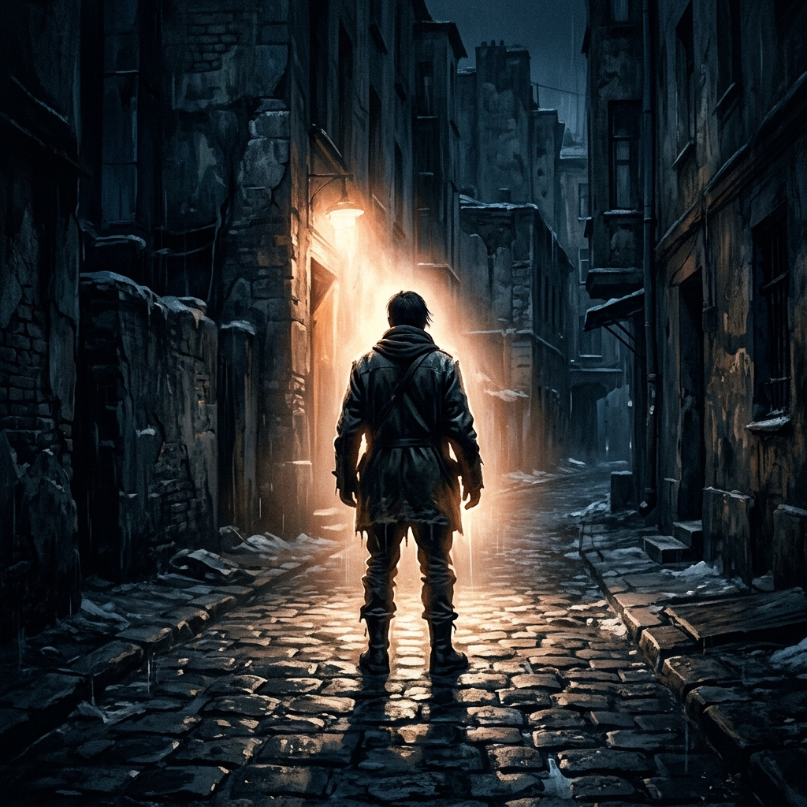

Svjetski savez mladih rođen je u konferencijskoj dvorani UN-a. Njegovo temeljno pitanje nije se promijenilo: daje li država ljudsko dostojanstvo — ili ga samo priznaje?
Dio I. — Prije 1999.
Kako je geopolitika instrumentalizirala ljudsku osobu
Godine 1974., državni tajnik Henry Kissinger sastavio je Memorandum o nacionalnoj sigurnosti br. 200 (NSSM 200). Njegov argument: rast stanovništva u zemljama u razvoju ugrožavao je američku moć. Rješenje — vezati stranu pomoć SAD-a uz programe smanjenja stanovništva u 13 ključnih zemalja.
- ›Cinična proturječnost: Britanska kraljevska komisija zaključila je da je pad stanovništva loš za britansko gospodarstvo — ali ga je preporučila britanskim kolonijama kako bi spriječila da postanu premoćne.
- ›13 ciljanih nacija: Indija, Bangladeš, Pakistan, Indonezija, Tajland, Filipini, Turska, Nigerija, Egipat, Etiopija, Meksiko, Brazil, Kolumbija.
- ›Strategija: Prezentirati geopolitičku kontrolu kao humanitarnu pomoć i "osobna prava" kako bi se izbjegao dojam vanjskog nametanja.
🏛️ 1999.: Kairo+5 — Rođenje SSM-a (WYA)
Na petogodišnjoj reviziji Međunarodne konferencije o stanovništvu i razvoju, 32 odabrane mlade osobe preuzele su riječ. Tvrdili su da predstavljaju svih 3 milijarde mladih u svijetu. Njihovi zahtjevi:
- → Pobačaj kao međunarodno ljudsko pravo
- → Brisanje roditeljskih prava
- → Seksualne i reproduktivne usluge za djecu od 10 godina
Odbili su razgovarati o čistoj vodi, obrazovanju ili sanitarnim uvjetima. Anna Halpine, tada 21-godišnjakinja, promatrala je tijek događaja i odlučila reagirati. Sastavila je ružičasti letak s porukom: "Ovi mladi ne govore u naše ime." Ušla je u dvoranu i podijelila ga.
Reakcija je bila trenutačna. Delegati iz zemalja u razvoju okupili su se oko nje. "Morate osigurati stalnu prisutnost u UN-u", rekli su joj. "Dođite u naše zemlje. Radite s našim mladima." Tako je osnovan Svjetski savez mladih (WYA).
Dio II. — Ljudsko dostojanstvo i totalitarizam
Mislioci koji su oblikovali SSM
Na konferenciji Peking +5, izaslanstvo SAD-a predložilo je zastrašujući obrat: "Ljudska prava daju ljudsko dostojanstvo." Ako se prihvati, ljudsko dostojanstvo postalo bi dar države — a ono što država daje, može i oduzeti. SSM je to odbio. Ali su se oslonili na četiri ključne intelektualne tradicije kako bi objasnili zašto.

Živjeti u istini: Temelj individualnog otpora.
Václav Havel
Moć nemoćnih — otpor nije politički nego kulturni. Svakodnevno 'živjeti u istini', u malim činovima, ono je što prijeti režimima izgrađenim na lažima.
Papa Ivan Pavao II.
Centesimus Annus (1991.) — Komunizam se nije urušio isključivo iz ekonomskih razloga. Propao je jer je bio sazdan na laži o ljudskoj osobi.
Viktor Frankl
Preživjeli iz Auschwitza i psihijatar. Čak i u logoru smrti, čovjek zadržava jednu slobodu: izbor svog stava. Dostojanstvo se ne može oduzeti — samo predati.
Jacques Maritain
Jedan od sastavljača Opće deklaracije o ljudskim pravima. Primijetio je: ljudi suprotstavljenih ideologija mogu se složiti oko popisa prava — ali se ne slažu oko pitanja zašto, oko temeljne prirode osobe.
"Komunizam se nije urušio zbog političkog ili ekonomskog neuspjeha, već zato što se temeljio na laži o ljudskoj osobi."
— Papa Ivan Pavao II., Centesimus Annus
Dio III. — Povelja SSM-a
Temeljna uvjerenja
- ›Urođeno dostojanstvo: Posjeduje se od začeća do prirodne smrti. Ne može ga dodijeliti niti opozvati nijedna vlada, institucija ili većinsko glasovanje.
- ›Pravo na život: Neotuđivi temelj slobodnog i pravednog društva. Država ga je obvezna štititi — u zakonu i u kulturi.
- ›Obitelj: Temeljna jedinica društva. Primarno mjesto gdje pojedinci uče o slobodi, solidarnosti i obvezi prema drugima.
- ›Integralni razvoj: Autentičan napredak je fizički, duhovan, mentalni i emocionalni — ne samo ekonomski.
- ›Kultura kao otpor: Ideje oblikuju društva. SSM citira skladatelje poput Paderewskog i Šostakoviča — čija je umjetnost postala čin otpora u 'društvima laži'.
Ključni obrat
SSM inzistira na tome da dostojanstvo NIJE proizvod prava. Prava su proizvod dostojanstva. Pogriješite u ovome i svaki okvir ljudskih prava se urušava.
Dio IV. — Sukob vrijednosti
Dvije vizije u istoj prostoriji
Godine 1999., dvije skupine stajale su u istoj konferencijskoj dvorani UN-a s radikalno različitim odgovorima na pitanje: Što mladoj osobi treba? Njihova nespojivost bila je potpuna — ne stvar stupnja, već prvih načela.
32 odabrane mlade osobe, tvrdeći da predstavljaju 3 milijarde. Njihova tri zahtjeva:
Pobačaj kao ljudsko pravo
Kodificirati pobačaj kao međunarodno zaštićeno pravo, uklanjajući sva državna ograničenja.
Dokidanje roditeljskih prava
Uklanjanje zakonske ovlasti roditelja da usmjeravaju moralni i vjerski odgoj svoje djece.
Seksualna prava za djecu od 10 godina
Seksualna i reproduktivna prava i usluge dodijeljene djeci od 10 godina, bez pristanka roditelja.
Čista voda, obrazovanje i sanitarne usluge nisu spomenuti nijednom.
Utemeljeno na tri neporecive tvrdnje o ljudskoj osobi:
Život od začeća do prirodne smrti
Svako ljudsko biće posjeduje neotuđivo dostojanstvo od trenutka začeća do prirodne smrti. Nijedna država ili institucija ne može definirati drugačije.
Obitelj kao temeljna jedinica
Obitelj — s roditeljima kao primarnim odgojiteljima — temeljna je jedinica ljudskog društva. To je prva škola slobode, solidarnosti i ljubavi.
Integralni razvoj osobe
Autentičan ljudski napredak obuhvaća fizičku, duhovnu, mentalnu i emocionalnu dimenziju — ne može se svesti isključivo na ekonomska mjerila.
"Ova prava su već zaštićena Općom deklaracijom o ljudskim pravima."
Zašto je razlika važna
Ovo nije rasprava o detaljima politike. Dvije strane imaju različita shvaćanja onoga što ljudska osoba jest. Ako prihvatite da država ili međunarodno tijelo može definirati osobu, svaki od tri zahtjeva UNFPA-a postaje logički dosljedan. Ako inzistirate da je dostojanstvo urođeno, sva tri se urušavaju.